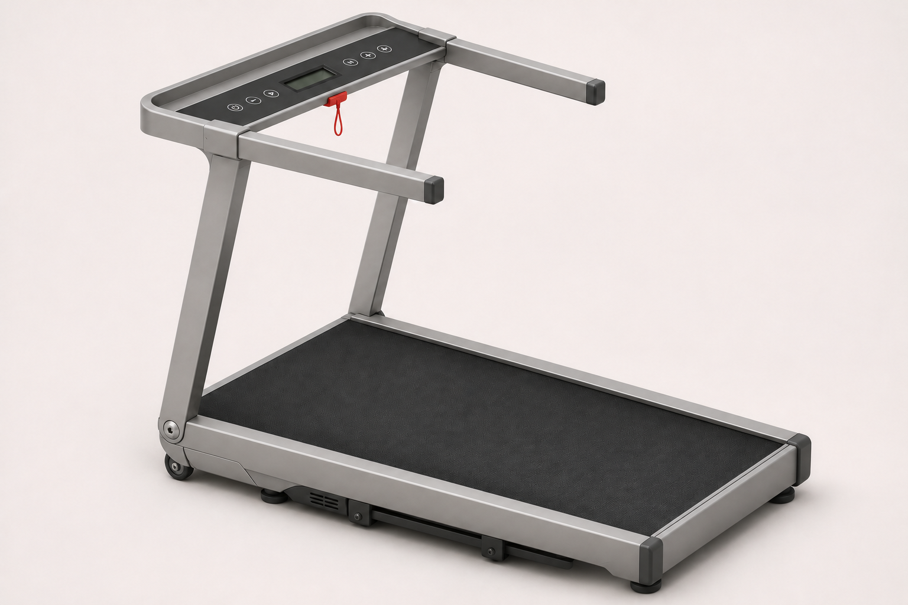
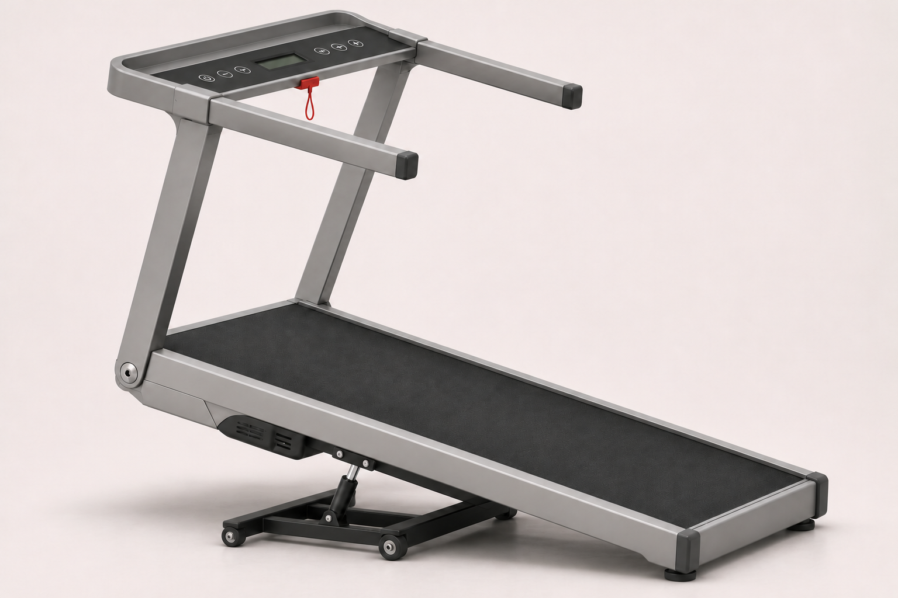
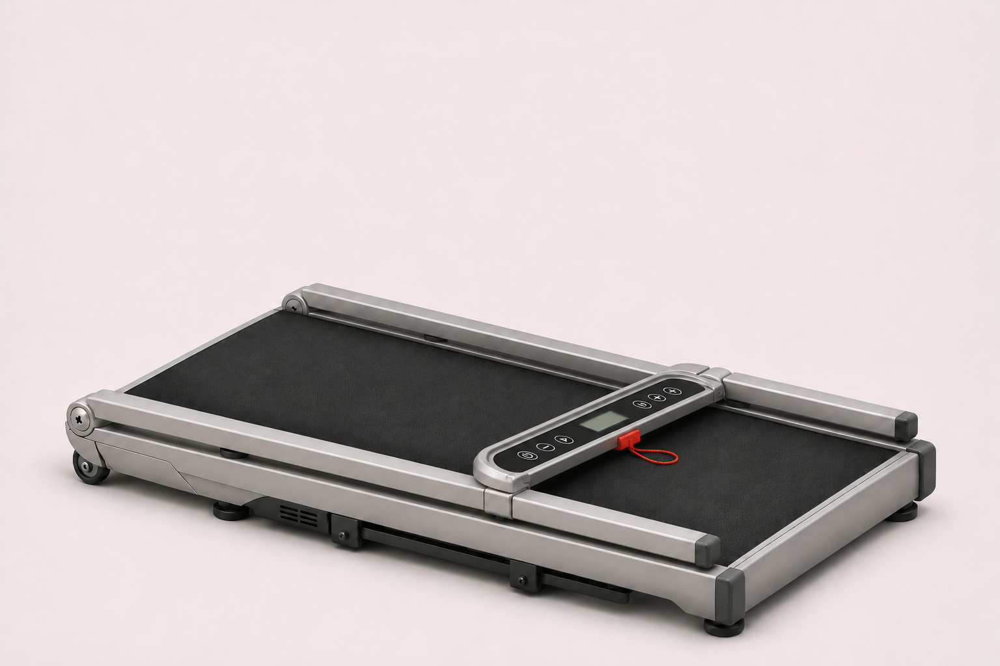
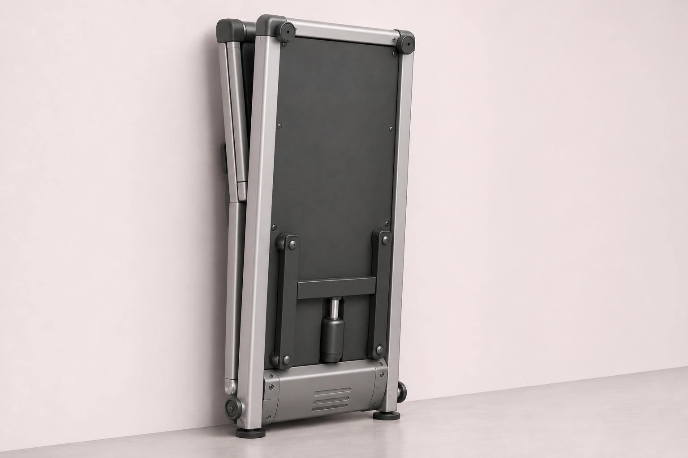
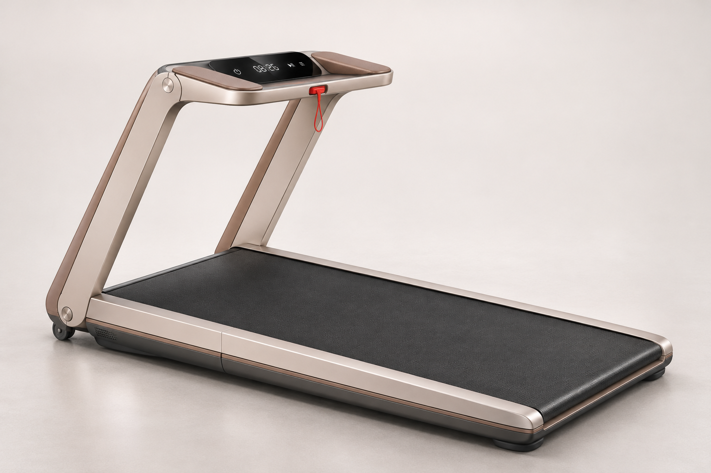
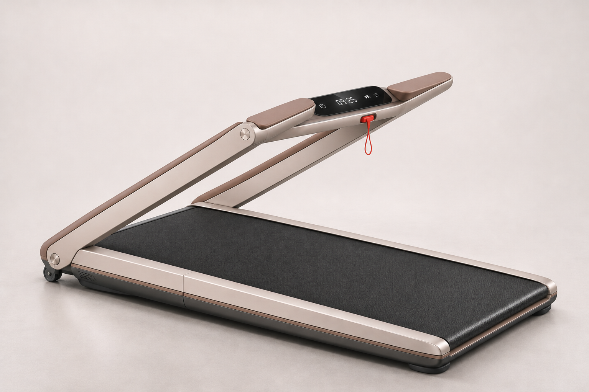
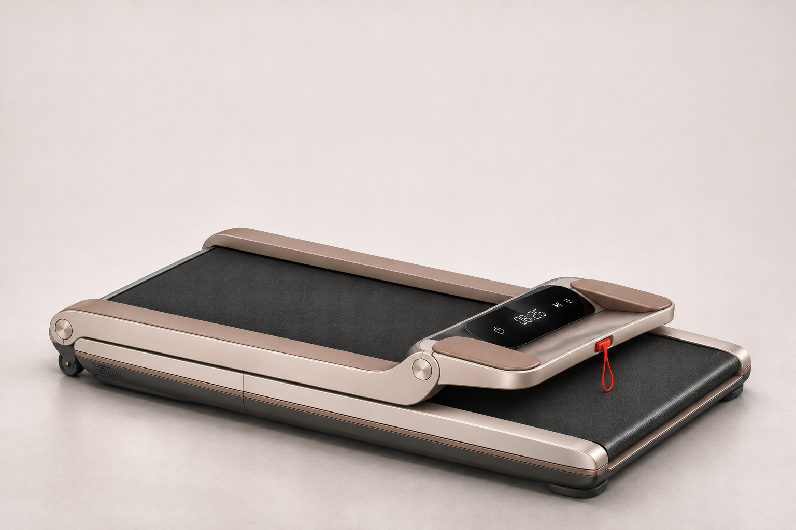
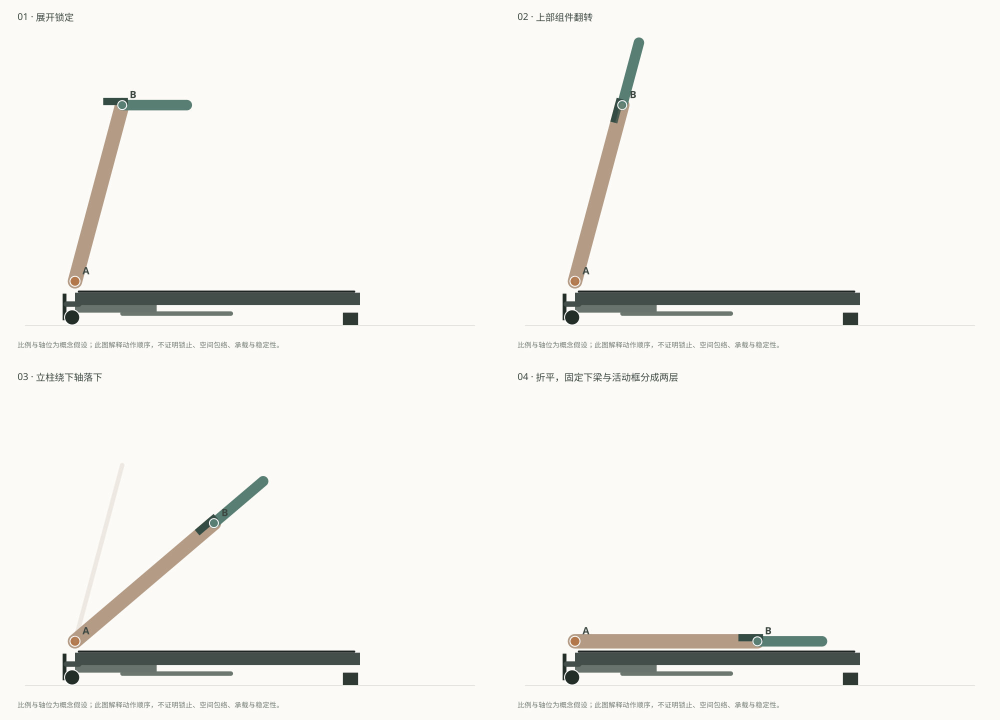

01 / LINEAR
同一方向，从平放到竖放。
延续同事草图的直立柱、低面板和双扶手。全域跑台是前提：机头体量移至跑面以下，不再保留上凸马达盖。

全域跑台，机头下置
保留同事的直立柱、横向控制区和双扶手；机头的斜向接缝移至跑面以下。

15° 目标，单杆 H 架
跑台前端抬升、尾端接地。图像表达造型；目标角度在下方侧视示意中查看。

上部翻转，立柱落下
控制面板随扶手整体转动；折平后面板朝上，活动立柱叠在固定侧梁外上方。

跑面朝墙，机底朝房间
机头落在下方，H 架收回机底。梁端软脚接地，搬动滚轮与地面留出间隙。
四张图均由同一展开基准图派生并逐图修订。生成图仍有局部几何差异；具体轴位与动作顺序以下方示意为准，不能据渲染判定制造尺寸或工程可行性。
02 / LYNMATE
保留大C，也要看得懂怎么折。
大C是展开时的整体轮廓。长下梁固定在跑台上；宽扁立柱绕下轴转动；扶手与面板组件通过上轴翻转让位。

大C的使用轮廓
固定下梁、活动立柱与上部扶手对齐；转轴和分件缝保留可见。

下梁不动，立柱转动
上下轴分工：上部先翻转让位，下轴带动立柱落向跑台。

两层构件，收成平面
长下梁始终不动；立柱叠在侧梁外上方，面板随上部组件收合。
A · 下转轴
承接同事“转轴立柱保持大C”的探索。轴线横贯机器宽度，立柱根部与固定侧梁留出独立分件缝。
B · 上部翻转轴
本次新增的机构提议：扶手与面板作为一组翻转，使其与立柱方向对齐后，再一同收下。不能把这处新轴说成同事已完成的结构。
折平后的层次
下层仍是固定跑台侧梁，上层是落下的立柱和扶手；两层之间需要留出真实间隙及限位缓冲。
锁止、左右同步释放和防夹尚待结构深化。“一键折叠”是既定目标，本页未将其画成已经实现的电动自动机构。
03 / MOTION STUDY
拖动，检查哪一段在动。
侧视示意沿用同一组假设杆长，避免在不同姿态里悄悄缩短立柱。先看折叠，再切换爬坡或竖放。
固定跑台与下梁活动立柱扶手／面板组件
查看完整四步侧视图

示意中的杆长、轴位、间隙与支脚轮廓均为本次概念假设。已检查二维杆长一致、下轴固定及简化侧投影间隙；尚未做三维干涉、内部封装、重心与承载校核。
04 / SOURCE CONTINUITY
对回同事原稿，区分沿用与新增。
原PDF解释概念语言，同事草图提供当前设计；全域跑台、折平与竖放需求同时约束本轮迭代。